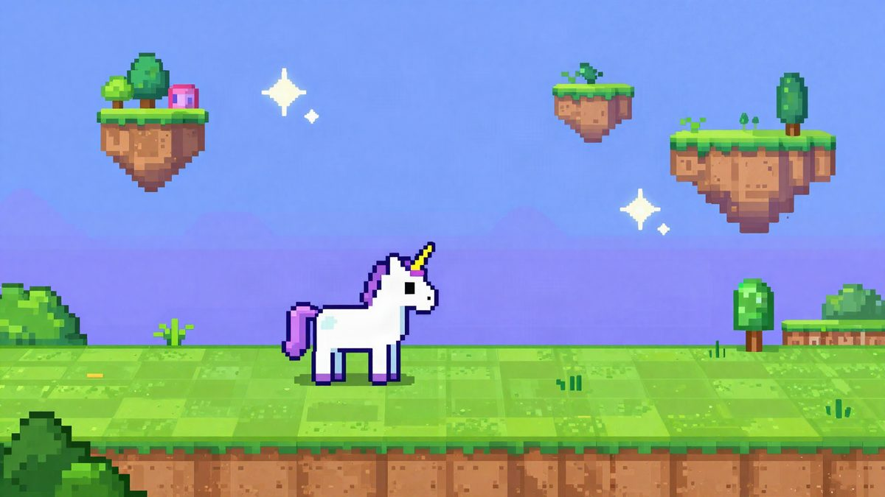
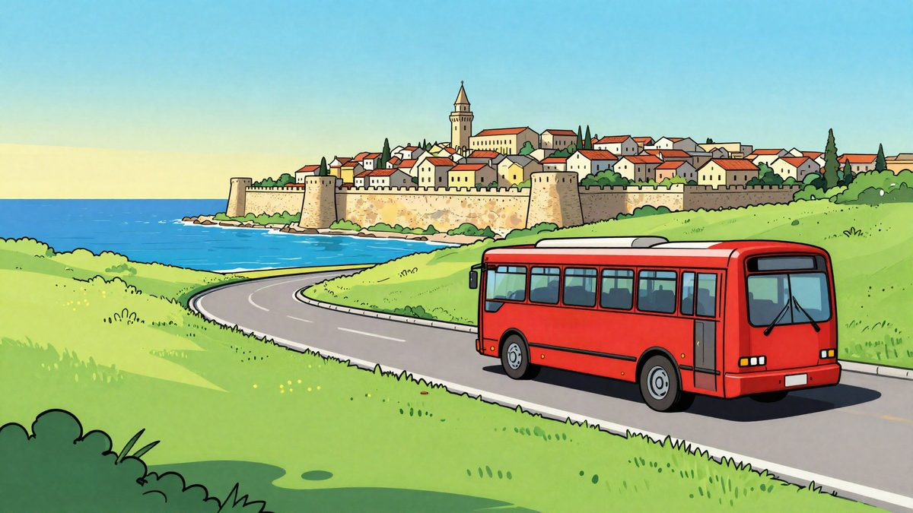

COO: besplatna igra u pregledniku u kojoj ste robotski golub u 3D Torontu od 630 km²

Yegor Sak, osnivač tvrtki ControlID i Windscribe, objavio je besplatnu igru COO u kojoj igrač kao robotski golub-špijun leti nad maketom Toronta. Mapa je navodno oko devet puta veća od one u GTA 5, a igra je napravljena za sedam dana uz pomoć Claudea. Radi izravno u pregledniku, bez instalacije.
Yegor Sak objavio je 5. studenoga igru COO (Covert Ornithological Operations), otvoreni svijet u kojem igrač upravlja robotskim golubom. Igra je besplatna i radi izravno u web pregledniku, bez instalacije. Cijela mapa je Toronto, a njezina je površina 630 četvornih kilometara, što je navodno oko devet puta više od mape iz GTA 5.
Igrač je P-7, tajni vladin dron u obliku goluba. Može slobodno letjeti i ispuštati izmet, ali ima i špijunske funkcije: skenira okolinu, zumira i analizira određene osobe. P-7 radi na struju, a kad se baterija isprazni, funkcije su mu ograničene. Tada se mora zaustaviti na električnim vodovima i napuniti.
Misije i stealth
Igra ima osam misija. Među njima su osnovni tutorial, krađa USB sticka iz određenog laptopa i predaja suradniku na dogovorenom mjestu, tajno hakiranje mobitela određene osobe te praćenje mete uz prisluškivanje njezinih razgovora. Autor igru opisuje kao nešto nalik na Watch Dogs. Tijekom misija P-7 razgovara s kolegom operaterom, koji mu daje upute.
Ako se golub ponaša sumnjivo i neprirodno, ljudi ga počnu primjećivati i raste mjerač sumnje. Kad se napuni, misija propada. Mjerač se spušta ako golub radi nešto tipično golubje, primjerice guče. Postoji i način rada bez misija, u kojem se grad može samo razgledavati.
Toronto u detaljima
Grafika je low-poly, u stilu stripa. Na temelju 3D podataka grada reproducirano je 438.819 stvarnih zgrada. Iznad grada se u stvarnom vremenu pojavljuju zrakoplovi koji u tom trenutku lete nad Torontom, a podatke igra dobiva iz sustava zračnog nadzora ADS-B. Po ulicama se kreću ljudi i promet.
Glasovi P-7, operatera i ostalih NPC-ova generiraju se u stvarnom vremenu neuronskim govorom. Dijalozi NPC-ova stvaraju se automatski, prema njihovu podrijetlu, trenutnoj lokaciji i onome što se upravo dogodilo.
Napravljeno u tjedan dana
Sak je osnivač tvrtke za kibernetičku sigurnost ControlID i VPN servisa Windscribe, a izrada igara nije mu glavni posao. Za razvoj je koristio generativne alate, među ostalima Claude, uz do 10 paralelnih radnih tokova, a igra je bila gotova za sedam dana. Kaže da je mapa toliko velika da još nije vidio 99 posto lokacija.
Igra je dostupna na službenoj stranici, a za igranje je dovoljan preglednik.
Izvor: Automaton (JP)
Povezani članci
 Far Cry Instincts Predator Recomp: Xbox 360 igra iz 2006. izvorno radi na PC-ju12. studenoga 2026.
Far Cry Instincts Predator Recomp: Xbox 360 igra iz 2006. izvorno radi na PC-ju12. studenoga 2026.
Claude Sonnet je izradio unicorn igru u manje od mjesec dana29. listopada 2026.
Dokle?, kviz TikTokera Alana Baudoina, u jednom danu odigran je više od 32.000 puta3. studenoga 2026.